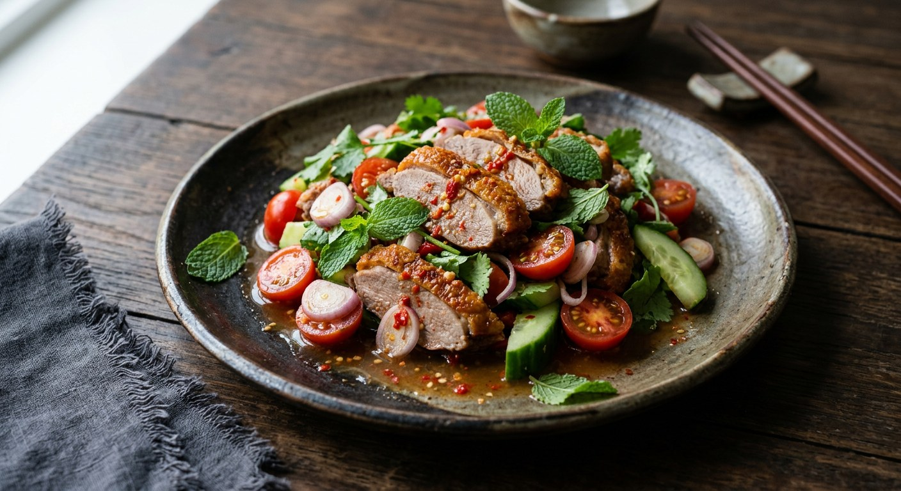

Chinese roast duck — crisp skin, five-spice fat and all — tossed in the Thai hot-sour dressing of lime, fish sauce and chilli. The salad that gives the leftover duck a second life.

ยำเป็ดย่าง is a Thai-Chinese dish with a Thai-Chinese origin story. The Pantip cook whose thread opens the topic is explicit about hers: the roast duck came home from the Chinese New Year offerings — ไหว้ตรุษจีน — and after the shrine had had its share, the rest went into the salad. That is the dish's whole logic: Cantonese-style roast duck is glorious hot, but a day later it is greasy and stiff — and Thai cooks have the exact remedy for rich, leftover meat. The hot-sour dressing.
The duck itself is not Thai at all. เป็ดย่าง is the Chinese roast duck — lacquered skin, anise and cinnamon through the meat — the same duck that tops the noodle shops. What makes the dish Thai is what happens to it: the meat is tossed in น้ำยำ, the sharp dressing of lime juice, fish sauce and chilli that defines every ยำ, then lifted with raw vegetables. Duckking, the Thai roast duck chain, publishes the dish on its own recipe page as one of its เมนูแซ่บ — its hot-and-spicy list — with the dressing weighed to the gram. The home version below does the same job with a bottle of sweet chilli sauce and a squeeze of ketchup, the way two BlogGang home cooks wrote it in 2010.
| Thai | English | Amount |
|---|---|---|
| เป็ดย่าง | Roast duck, sliced bite-size | 300 g |
| แตงกวา | Cucumber, sliced | 2 |
| หอมหัวใหญ่ | Onion, thinly sliced | 1 |
| มะเขือเทศ | Tomato, sliced | 1 |
| ต้นหอม | Spring onions, cut into lengths | 2 |
| ผักชี + พริกชี้ฟ้าแดง | Coriander and red spur chillies, for garnish | 2 stalks |
| ผักสด | Lettuce or salad greens, to line the plate | as needed |
| The dressing (น้ำยำ) | ||
| พริกขี้หนูซอย | Bird's eye chillies, sliced | 2 tbsp |
| น้ำมะนาว | Lime juice | 4 tbsp |
| ผงปรุงรสไก่ | Chicken seasoning powder | 1 tsp |
| น้ำปลา | Fish sauce | 3 tbsp |
| ซอสพริก | Sweet chilli sauce | 2 tbsp |
| ซอสมะเขือเทศ | Tomato ketchup | 2 tbsp |
| น้ำตาลทราย | Sugar | 1 tsp |
The restaurant plate (Duckking): 120 g roast duck, 50 g onion, 50 g seeded tomato, 25 g spring onion, 25 g celery, with the dressing weighed at 45 g lime juice, 40 g fish sauce, 30 g sugar, 12 g chopped bird's eye chillies and 8 g chopped garlic — no ketchup, no sweet chilli sauce, and celery in the cucumber's place. Scale it up for the table. The leftover pot (Pantip): the New Year duck, deboned and seared in a pan until hot, dressed Isaan-style with lime, fish sauce, sugar, roasted rice powder (ข้าวคั่ว), shallots and coriander — the chilli left out because the cook's daughter does not eat hot food. The Lemon8 technique: warm the duck briefly and rest it before slicing, so it neither dries nor crumbles, and loosen the dressing with a spoon of the duck's own juices.
The dressing. Duckking is the purist: lime juice, fish sauce, sugar, chilli and garlic — a 45:40:30 ratio, weighed. The BlogGang home cooks add sweet chilli sauce, ketchup and chicken seasoning powder, which rounds the same balance off for a family table. Lemon8 keeps it to lime, fish sauce and a little sugar, with garlic optional, and stretches it with a spoon of the duck's own juices. Pantip dresses the duck Isaan-style — lime, fish sauce, sugar and roasted rice powder — and skips the chilli for the children.
The vegetables. Duckking: onion, seeded tomato, spring onion and celery — restaurant restraint. BlogGang: cucumber, onion, tomato, spring onion. Lemon8: cucumber, tomato, onion, carrot and coriander, with the onion soaked in cold water for five minutes first if it is strong. The cucumber question splits the sources straight down the middle.
Garlic. Duckking's dressing carries 8 g of chopped garlic. The BlogGang dressing has none at all. Lemon8 says a little garlic now and then, "to make it more fragrant". A matter of taste, and every version works.
How the duck is treated. Pantip debones the leftover duck and sears it in a pan until hot; Lemon8 warms it gently and rests it before slicing, so it neither dries out nor crumbles in the tossing; Duckking and BlogGang slice it straight from the roast. The first two agree on the principle — cold, fridge-hard duck does not belong in the salad.
The sugar. White sugar in Duckking, BlogGang and Pantip. Lemon8 allows palm sugar instead — the only source that does. All four keep it small: the sweet chilli sauce and the duck itself are already sweet.
This recipe is translated from the following Thai-language sources. Where they disagree, we've said so.
1. BlogGang — "ยำเป็ดย่าง" by tongsehowgolf (the home recipe used here) — bloggang.com
2. Duckking — "ยำเป็ดย่าง" (the roast duck chain's published restaurant recipe, weighed to the gram) — duckking.co.th
3. Lemon8 — "วิธีทำยำอกเป็ดย่าง รสจัดจ้าน เปรี้ยวเผ็ดครบ ใส่แตงกวา-มะเขือเทศ" (the warming, slicing and duck-juice techniques) — lemon8-app.com
4. Pantip — "น้ำตกเป็ดย่าง" topic 36073668 (the post-Chinese-New-Year leftovers story; the Isaan rice-powder version) — pantip.com
5. BlogGang — "ยำเป็ดย่าง" by somkitjar (the same home recipe in a second diary) — bloggang.com